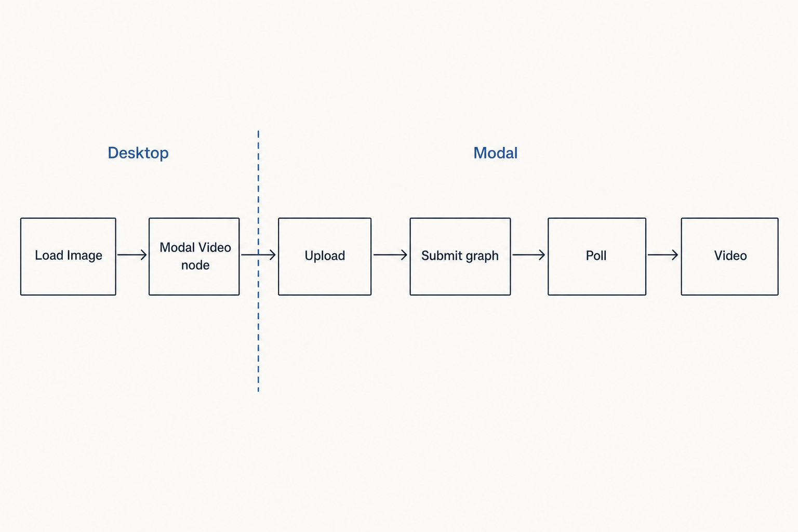
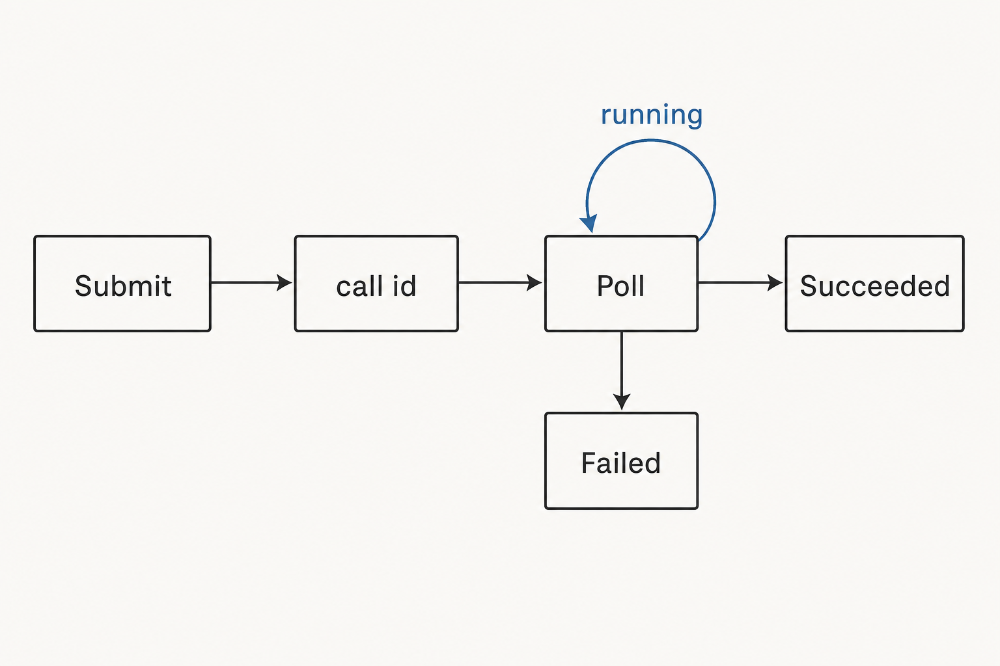

Modal Video node for ComfyUI Desktop
Purpose
- Desktop ComfyUI, no GPU: load an image, wire it into one node, get a video back on the canvas.
- The render runs on the hub's existing Modal ComfyUI, through the same submit/poll door the web UI uses.
Options
| How | Fits | Cost | |
|---|---|---|---|
| O1pick | One node in this pack calls the hub's Modal /submit + /status endpoint with a pinned image-to-video graph. Same lane Alex's web UI uses today. |
Already deployed, already proxy-authed, already carries video as base64. Only the node is new. | Small. One Python node, a Modal key pair on the desktop. |
| O2 | Comfy-Org's Remote Node Protocol: a Modal web endpoint advertises nodes, the official client package auto-creates them in Desktop. | Official direction, video-by-URL built in. Server spec lives in a private Comfy-Org repo, one server per process, env-var config, early. | Medium-large. A new RNP server on Modal plus catching a moving spec. |
| O3 | Subgraph shippers (NetDist, comfy_remote_run, Distributed): the local graph sends a slice to a reachable remote ComfyUI. | Any graph, built on the canvas. Needs a long-lived ComfyUI URL with no auth, same nodes and models both sides, image-only returns, all third-party. | Medium, plus a tunnel to keep alive. Wrong shape for serverless Modal. |
Rejected: Comfy Cloud nodes
Core since v0.34.5, runs on Comfy's GPUs, credits per second. Fixed catalogue, no own models or LoRAs, not Modal. Fine for a demo, not for the studio pipeline.
Flow (O1)
load image on canvas > Modal Video node uploads image > bind pinned i2v graph > submit to Modal > poll status > video on canvas

Stages
1. Canvas input
- In an IMAGE from any node, plus widgets: recipe (which pinned i2v graph), prompt, length, seed.
- Does the node is a normal Comfy node. Nothing runs until the queue reaches it.
- Out image tensor and settings, in memory.
- Why here the user never leaves the canvas. No web UI, no upload dialog.
2. Ship the image
- In the image tensor.
- Does encode to PNG, upload to the Modal user-inputs volume, the same door the hub's img2img upload uses.
- Out a filename the remote ComfyUI can load.
- Why here the submit endpoint takes a graph, not bytes. The image has to be on the volume first.
3. Bind the graph
- In the pinned image-to-video API graph for the chosen recipe, plus filename, prompt, length, seed.
- Does rewrite the loader node to the uploaded filename and the prompt/length/seed widgets. Same binding the engine lane does before a Draw.
- Out a complete API-format graph.
- Why here the model, loaders and sampler are fixed server-side. The desktop only fills the blanks.
4. Submit and poll
- In the bound graph, Modal key and secret from the desktop environment.
- Does POST submit, get a call id, poll status every 2 s. Progress shows on the node. Cancel on interrupt.
- Out a succeeded payload: base64 bytes plus extension.
- Why here this is the exact contract the web UI's GPU client already speaks. No server change to start.

5. Video on canvas
- In base64 mp4.
- Does write to the desktop output folder, return a VIDEO output and an inline preview.
- Out VIDEO socket, wirable into Save Video or any video node.
- Why here the clip lands where the rest of the graph expects it, and on disk for the order.
Check
- Canvas input: node appears under Symbiotica, IMAGE socket accepts Load Image.
- Ship the image: the file shows up in the user-inputs volume listing.
- Bind the graph: the submitted graph names that file and the typed prompt.
- Submit and poll: status goes running, then succeeded, inside 9 minutes.
- Video on canvas: the preview plays, the mp4 is in the output folder, Save Video accepts the socket.
Handoff notes for implementation
- Endpoint symbiotica-hub
services/comfy-modal/app.pyapi()asgi app,requires_proxy_auth.POST /submitbody{"workflow": <api graph>}→{"call_id"}.GET /status?call_id=→ 202 running, 200{"status":"succeeded","image_b64","ext"}or failed. HeadersModal-Key,Modal-Secret. Reference clientapps/web/src/lib/comfy/gpu-client.ts(2 s poll, 285 polls). - Known caps only the first history output returns, 540 s server-side cap, clip travels as base64 JSON with no size guard (5.9 MB seen). Video already passes: SaveVideo writes into history images, ext mp4/webm/mov.
- Image upload volume
symbiotica-comfy-user-inputsmounted as ComfyUI input dir. Hub route/volumes/{name}/upload(app.py:1507) andapps/web/src/routes/api/imagegen/upload. Reuse, do not add a bytes-in-submit path. - Pinned graphs engine lane reads pinned pairs from R2 and binds via
apps/web/src/lib/studio-engine/bind.ts(rewriteLoaders). First version: bundle one i2v API graph in the pack, recipe widget is a combo over bundled graphs. Later: read fromsymbiotica-comfy-workflowsvolume. - Desktop config env vars
MODAL_ENDPOINT_URL,MODAL_TOKEN_ID,MODAL_TOKEN_SECRETon the desktop, same names the hub uses. Node reads them likepy/pipeline/ai_gateway.pyreads the gateway env. - This pack new v3 node beside
py/gemini_image.py(already does image→base64→HTTP→tensor). Tensor helperpy/pipeline/reference_images.py:to_tensor. VIDEO output via comfy_api video-from-file, plus PreviewVideo UI. No VIDEO type exists in the pack yet. Expose through the V1 mapping shim like the others. Loadcomfyui-nodes-dev,comfyui-node-outputs,comfyui-node-datatypesbefore writing. - Server change, optional return all outputs from
/status(list of {b64, ext, name}) so multi-clip graphs work. Not required for the first cut. - Rejected O2 RNP: server reference is private, env-var single server, spec still moving. O3 subgraph shippers: need a persistent unauthenticated ComfyUI URL, image-only returns, serverless containers die between calls. Comfy Cloud nodes: catalogue only.
Amendments
2026-09-14T22:40Z — O1 and O2 built, Qwen image test
O1 ships as the Modal Render node (recipe combo, prompt, seed, size) calling the hub's submit/status door. O2 ships as an RNP/1 server on Modal (app symbiotica-rnp, token in the URL path) plus a thin RNP client in the pack that fetches the server's nodes at startup; the official Comfy-Org client needs a ComfyUI API newer than Desktop 0.35.1 and is GPL, so it is not vendored. One recipe so far, qwen-image (text to image). Image inputs wait on a hub change: the render container mounts only the models volume. Two canvas workflows live in the local ComfyUI (1) install.